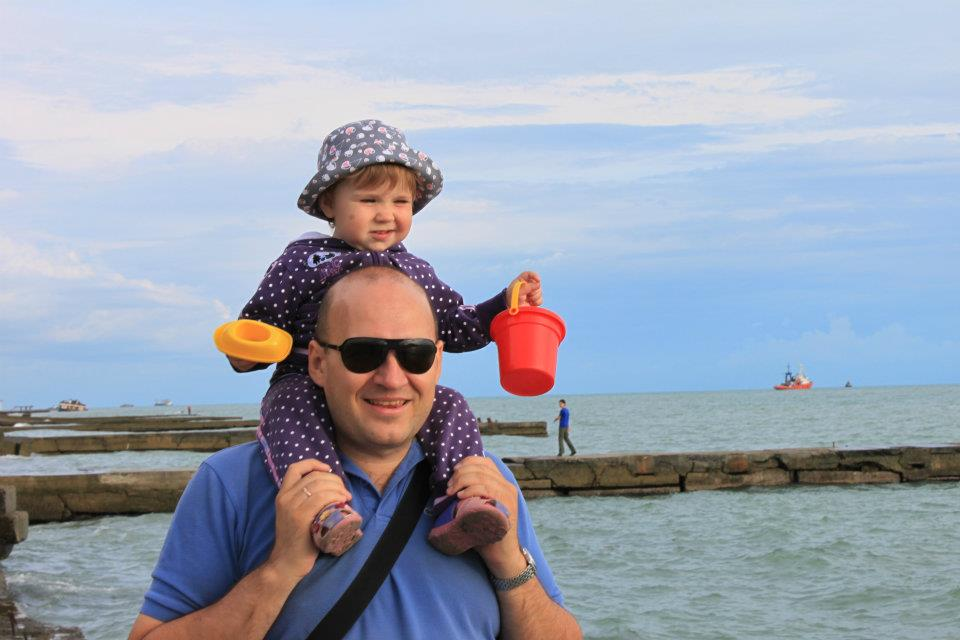
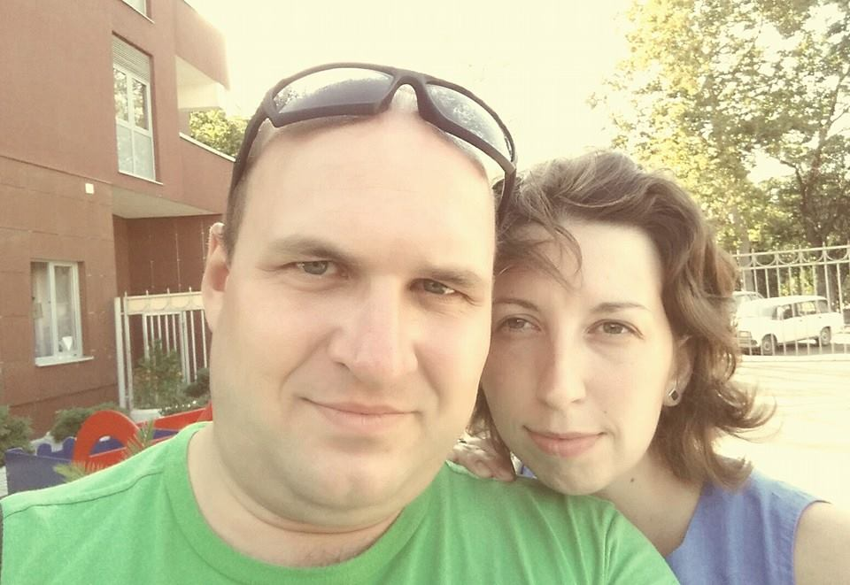
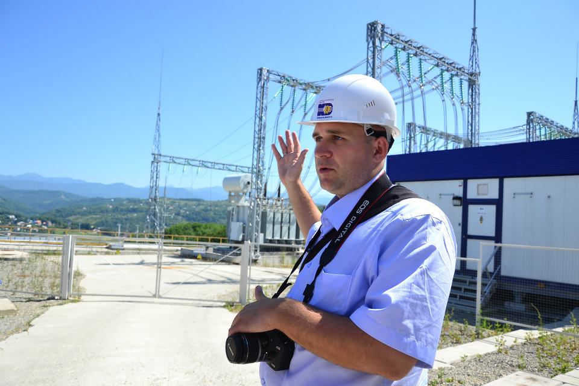
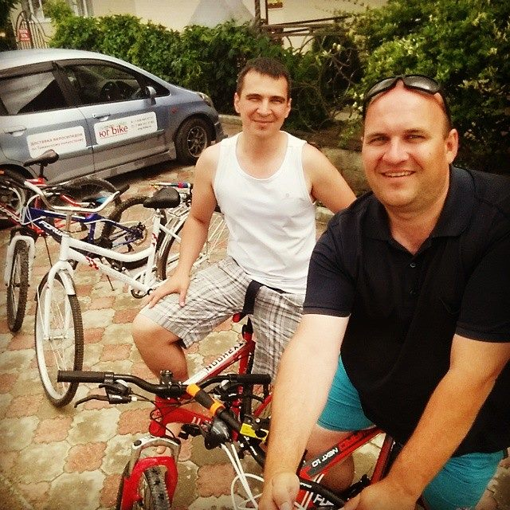
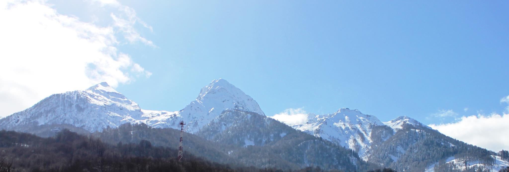

В моём Фейсбуке немногим более 300 друзей. За последние 5 лет больше 10% из них переехало из Кемерова. Я решил задать поуехавшим вопрос: как они укатились от жизни такой. Сменить место жительства мечтают многие, но решаются на это единицы.
По четвергам, в течение нескольких будущих недель, мы познакомимся с каждой историей поближе.
Первым ответил не несколько моих вопросов Евгений Демченко.
Про Кемерово и свой бизнес
Я родился в Юрге, а университет окончил в Томске. Так что, Кемерово для меня уже был третьим городом. Мне он не понравился сразу. Переезд из Томска был несколько спонтанным, и я пожалел об этом очень быстро.
Но потом как-то все наладилось: работа в деловых изданиях, три книги написал, начал собственный издательский бизнес (журналы “Строительный Кузбасс” и “Сибирский уголь в XXI веке”). Купили в ипотеку таун-хаус в Лесной Поляне, хорошую машину. Вроде бы, жизнь удалась - живи да радуйся! Но, как говорила героиня фильма “Москва слезам не верит”, именно в этот момент хотелось больше всего волком завыть. Какая-то вселенская тоска и общее впечатление неправильной жизни.
Купили в ипотеку таун-хаус в Лесной Поляне, хорошую машину. Вроде бы, жизнь удалась - живи да радуйся! Но, как говорила героиня фильма “Москва слезам не верит”, именно в этот момент хотелось больше всего волком завыть.
Тогда у нас с женой появлялись первые разговоры о переезде в другой город. Возвращение в Томск не рассматривалось. Говорили больше о Москве и Питере. Но всегда все упиралось в бизнес. Пока он есть, мы никуда не уедем.
Все изменил кризис 2008-2009-го. Рекламный рынок резко упал. Денег на выпуск журналов не хватало. Мы продали бизнес, расторгнули ипотечный договор, продали машину… Казалось бы, жизнь катится под откос. Но мы почему-то обрадовались. Больше ничего нас с этим городом не связывает. Впрочем, до переезда еще было далеко.

Я начал редактировать газету «Мой город». Это был очень интересный и безумно творческий этап моей жизни. Мы делали классную газету и нам нравился процесс и результат. Потом был менее интересный, но тоже плодотворный этап: работа пресс-секретарем в департаменте строительства областной администрации.
Про переезд
Перелом наступил, кажется, в 2009-м году. Моя жена, Оля, выиграла поездку на всероссийский фестиваль прессы в Дагомысе (Сочи). Вернулась оттуда с горящими глазами. Только и разговоров было, как там здорово и что мы здесь делаем.

В 2011-м планировали совместный отпуск в Краснодарском крае. Но мы ждали ребенка, и врачи жену не отпустили. Я поехал один. В Краснодаре встретился с друзьями по Томскому госуниверситету. Они пообещали помочь с работой. Краснодар меня очаровал. Он похож на Томск: сочетание старинного купеческого города и современного мегаполиса. Очень динамичный, драйвовый город.
Потом была Анапа. Я впервые увидел море, когда мне шел уже 31-й год. И тогда уже точно решил: переезжаем. Решение было принято в июне, а переехали мы в августе.
Хотелось, конечно, в Сочи. Там в это время шла олимпийская стройка. Очень хотелось в этом проекте принять участие. Но там не удавалось найти работу. И мы решили взять курс на Краснодар. В Сочи мы переехали позже...
Технически переезд был очень простым. Вещей у нас было немного. Большая их часть вместилась в нашу Ладу Калину. Остальные пересылали родственники траспортными компаниями (особенно могу порекомендовать «Деловые линии»). Путешествие на машине за 4 тысячи километров — отдельная тема. Это было очень круто. Я просто подсел тогда на автотуризм. Сибирь, Урал, Поволжье, прикаспийские полупустыни, Северный Кавказ и, наконец, Кубань — все это видела моя Калина. Через несколько лет мы повторили это путешествие с женой. А во время переезда мне вызвался помочь мой тесть - отличный водитель.
Первое жилье на юге нашли за пару дней — дом в станице Елизаветинская, в пригороде Краснодара. У нас была мечта пожить в частном доме. Жена с дочкой (ей тогда было 8 месяцев) прилетела самолетом через две недели. За это время я подготовил сделал небольшой ремонт в доме и нашел работу.
Про работу
Друзья, действительно, выручили, помогли устроиться сначала заместителем редактора на городскую телекомпанию, а потом в дирекцию по связям с общественностью Кубаньэнерго. Через полгода возникла вакансия помощника директора по связям с общественностью в сочинском филиале Кубаньэнерго, и я попросился на это место. Уже через неделю, закончив срочные дела в Краснодаре, искал квартиру в предолимпийском городе.

Три года работы в Сочи - это очень сложный, но безумно интересный период жизни. Кубаньэнерго строило 16 олимпийских объектов: подстанции, линии электропередачи, объекты распределительной сети. Мы фотографировали, снимали фильмы и телесюжеты, организовывали пресс-конференции, писали релизы, статьи, готовили интервью. В принципе, обычная работа специалиста по связям с общественностью, но здесь было столько драйва, энергии, динамики. Я получил первый серьезный опыт кризисных коммуникаций, опыт подготовки и реализации крупных PR-проектов. Во время Олимпийских игр я почти не спал и сами игры прошли мимо меня. Открытие я посмотрел только в повторе по телевизору...
После олимпиады все изменилось. Зарплату сократили, убрали компенсацию на аренду жилья и я уволился. Два месяца работал в Москве, но быстро понял, что жить теперь могу только на юге. Вернулся в Сочи, устроился начальником отдела рекламы и PR в Горно-туристическом центре “Газпром”.
Жена после декрета не стала возвращаться в журналистику. Устроилась на работу в аппарат дорожной компании, которая вела строительство одного из крупнейших олимпийских объектов - дублера Курортного проспекта в Сочи. Потом работала начальником общего отдела в Горно-туристическом центре “Газпром”. То есть, последние три месяца в Сочи мы работали вместе. Жили в гостинице для сотрудников. Кругом - вершины Большого Кавказа, до моря - 50 километров по отличной дороге, которую построили к Олимпийским играм.
Перед увольнением жена встретилась со своими бывшими коллегами из дорожной компании. Они сказали, что сейчас занимаются строительством моста в Крым. База находится в Тамани. Предложили ей там место с жильем. Мы согласились и в апреле этого года переехали в Тамань.

Я себе работы не нашел. Решил заняться бизнесом вместе со своим томским другом. Сейчас у нас агентство недвижимости в Темрюке и PR-агентство, работающее с компаниями в Сочи, Краснодаре и Тамани. На сезон для развлечения открыли прокат велосипедов в курортной станице Голубицкая. Он стал нашим летним офисом. Осенью и зимой будем работать в Темрюке.
Про жильё
В Краснодаре мы снимали отличный частный трехкомнатный дом в пригороде (станица Елизаветинская) за 15 тыс. рублей. Мне нравилось, что есть своя территория для отдыха, парковочное место для машины. В городе за эти же деньги можно было снять полноценную однушку или небольшую двушку в спальном районе.

В Сочи перед Олимпиадой жилье было дорогое. Мы поменяли несколько квартир от однушки-хрущевки за 22 до трешки за 35 тыс. рублей. Аренду жилья мне компенсировал работодатель. После Игр цены резко упали. За 20 уже можно было снять очень хороший вариант.
Сейчас в Тамани мы снимаем дом за 15 тыс. рублей в месяц. Аренду оплачивает работодатель жены.
Пока жили в Краснодаре, купили себе хорошую двухкомнатную квартиру за 1,5 млн. рублей в строящемся доме. Пока жили в Сочи, дом достроили. Так что мы сейчас владельцы двушки в Краснодаре.
Доходы и расходы
Краснодар ничем принципиально от Сочи по расходам/доходам не отличается. Такие же в среднем зарплаты, такие же в среднем цены в магазинах.
В Сочи жизнь была очень дорогой. Зарабатывали мы хорошо, но никаких накоплений не сделали. Сочи - это город-праздник. Там трудно удержаться от соблазнов.
Очень большие расходы в Сочи были на детский сад. Устроится в муниципальный сад было нереально, даже если “дать на лапу”. Частных садов много, но стоят они около 30 тыс. рублей в месяц. Делать нечего - платили. В Тамани наоборот: все очень дешево. В муниципальный сад устроились сразу же. Овощи, фрукты и вкуснейшая рыба, которую здесь ловят в море и в реках - стоит копейки. Даже в сетевых магазинах, типа Магнита, все дешевле, чем в Сочи. Доходы у нас сейчас не фантастические, но на жизнь хватает.
Что изменилось в жизни вообще?
Жить стало интересно и легко. Больше нечего добавить.
Что лучше: Кемерово или Сочи?
Есть несколько важных отличий. Во-первых, климат. Пока живешь в одном месте, даже трудно представить, какое это имеет значение. Это я осознал очень хорошо во время двухмесячной жизни в Москве. Отсутствие солнца, холод, дождь и снег - все это очень давит на человека. В Краснодарском крае солнце греет даже зимой. Снег может не появиться вообще, или выпадает только на пару недель. Летом на самом деле не так уж и жарко. В любом случае всегда есть возможность до моря и “снять стресс” от жары. В Сочи мы купали в море двухлетнюю дочку в ноябре, а я закрывал сезон в начале декабря. Открывал - в конце апреля или начале мая. Без экстрима и “моржовских” подвигов.
Во-вторых, экология. В Краснодарском крае я знаю два города, где экология не лучше Кемеровской - это Туапсе и Новороссийск. В первом находится нефтеналивной терминал и НПЗ, во втором - цементные заводы и огромный порт. Краснодар, Сочи, Тамань - очень благополучные в экологическом смысле места. Самое шикарное место, где мы жили - Красная Поляна. Я очень удивлялся, что машину можно не мыть несколько недель. Пыли практически нет, и даже небольшой дождь делает ее абсолютно чистой. Воздух очень “вкусный”, дышишь и получаешь удовольствие. Когда я последний раз приезжал в Кемерово, было очень непривычно вдыхать в себя смесь, которая в Кузбассе называется воздухом. Москва и Питер тоже поразили своей вонью, хотя до переезда на юг, я этого не замечал.
В-третьих, люди. У южан есть свои недостатки. Они необязательны. Очень непунктуальны. Хитры и непрямолинейны. Но в то же время, это очень светлые и позитивные люди. У меня здесь появились хорошие друзья и товарищи, с которыми очень приятно общаться и вести дела. Я сам стал очень похож на них за четыре года жизни здесь. И теперь “северяне” мне кажутся мрачноватыми и слишком серьезными людьми.
Что было сложнее всего оставлять в Кемерове?
В Юрге у меня осталась мать и брат. Отец умер два года назад. Я до сих пор переживаю, что меня не было рядом, когда это случилось. Правда я взял отпуск и приезжал за две недели до его смерти в Юргу. Но это слабое утешение...
Хотел бы в ближайшие лет 5 переехать куда-то ещё?
Через два года дочь пойдет в школу. В Тамани уровень образования довольно слабый. Кроме того, к 2018 году мост в Крым будет достроен, поэтому делать в Тамани нам будет нечего. Мы планируем вернуться в Краснодар или Сочи. В Краснодаре у нас есть квартира, но все-таки хотелось бы в Сочи…